Onze campings
Dit zijn de campings en vakantieparken waar wij met ons gezin en de caravan zijn geweest. Bij elke camping lees je ons cijfer, wat wij fijn vonden en wat beter kon.
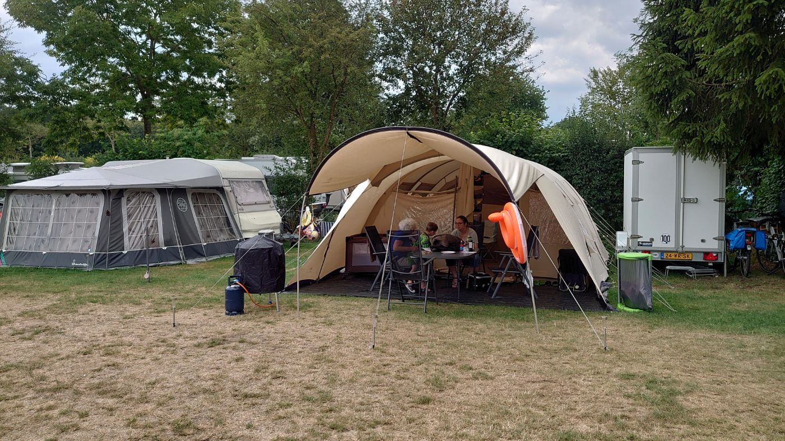
Vakantiepark de Luttenberg Luttenberg, Overijssel · Overijssel · Nederland
Een gemoedelijk familiepark aan de bosrand, aan de voet van de Sallandse Heuvelrug. Je loopt zo het bos in, er zijn meerdere speeltuinen en het park heeft een…
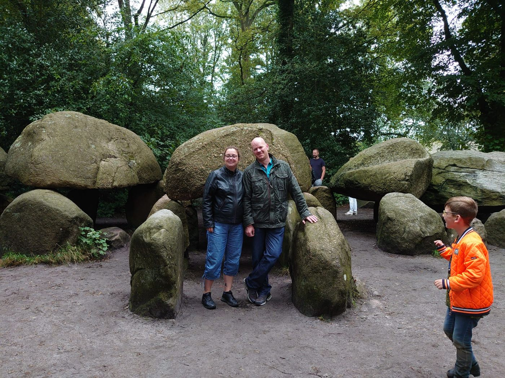
De Lente van Drenthe Gasselte, Drenthe · Drenthe · Nederland
Aan de rand van het Gieten-Borgerbos, op loopafstand van de zwemplas 't Nije Hemelriek. Ruime kampeerveldjes, een zwembad, speeltuinen en veel fiets- en…
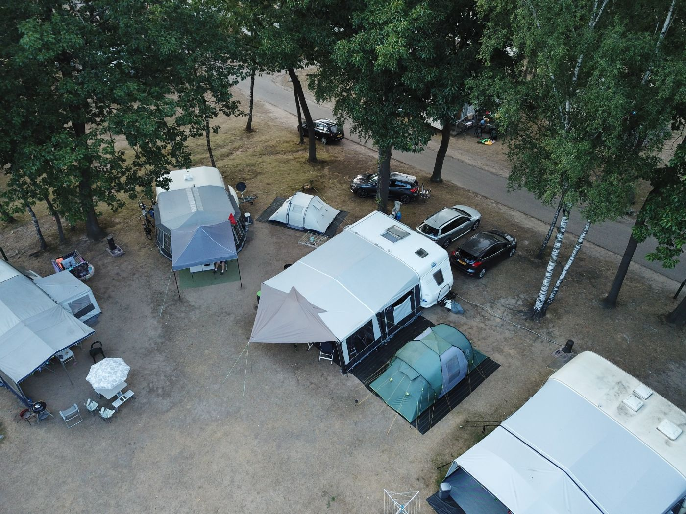
Vakantiepark De Berckt Baarlo, Limburg · Limburg · Nederland
Een park met een middeleeuws kastelenthema, vlak bij de Maas. Het zwemparadijs heeft draken, een slotgracht en een drakenglijbaan, leuk voor de kinderen.
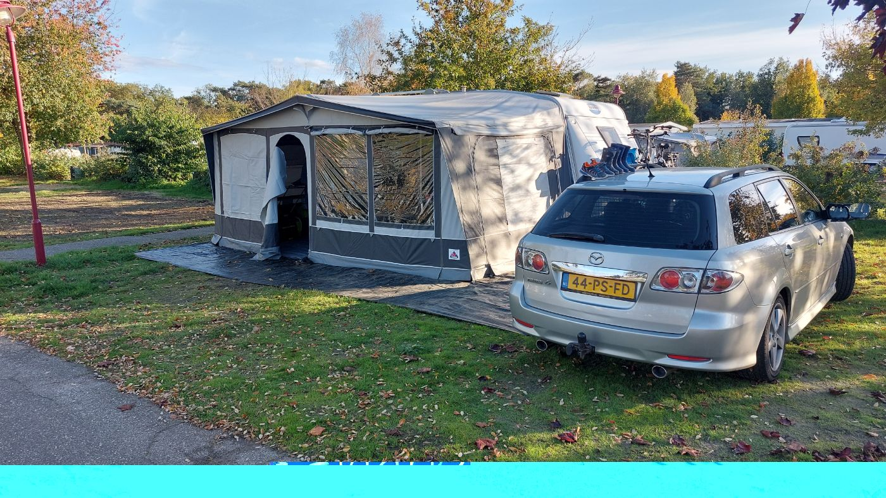
Vakantiepark Prinsenmeer Ommel (gemeente Asten) · Noord-Brabant · Nederland
Groot vakantiepark in Ommel bij Asten, aan een recreatieplas met zandstrand. Met een subtropisch zwembad, glijbanen, speeltuinen en midgetgolf is er voor…
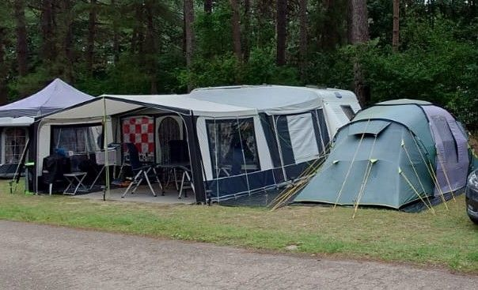
Vakantiepark Hengelhoef Houthalen-Helchteren (België) · Limburg · België
Groot vakantiepark in de bossen van Belgisch-Limburg, met een zandstrand aan een meer en een overdekt subtropisch zwembad met glijbanen. Ideaal voor gezinnen…
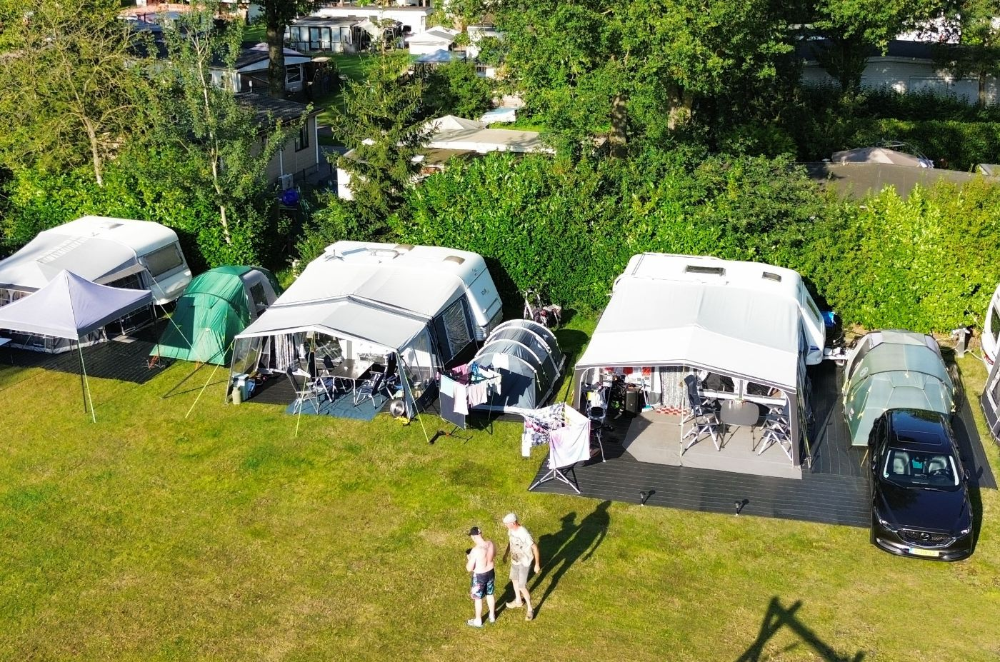
Vakantiepark Slot Cranendonck Soerendonk, Noord-Brabant · Noord-Brabant · Nederland
Een gezinspark in het groen. Midden op het terrein ligt een visvijver met autovrije plekken eromheen. Er zijn speeltoestellen op de velden, een…
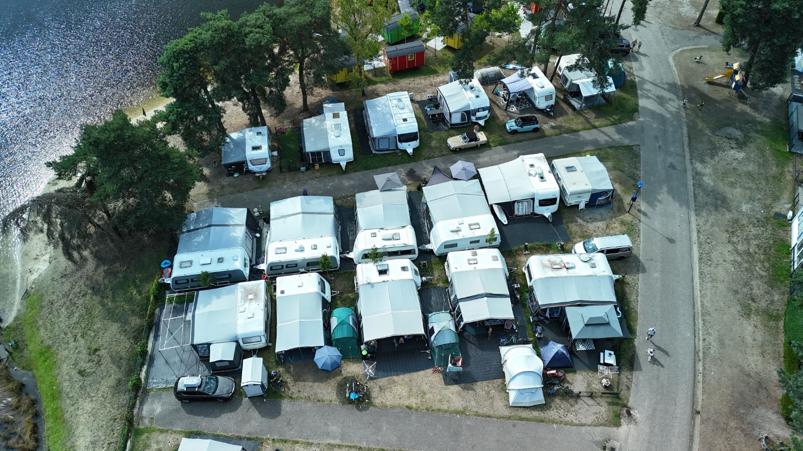
Camping BlauweMeer Lommel, België · Limburg · België
Een vakantiepark aan een meer en bos aan de rand van Lommel. Er is een strandje aan het meer, een restaurant, een binnenzwembad en een grote binnen…
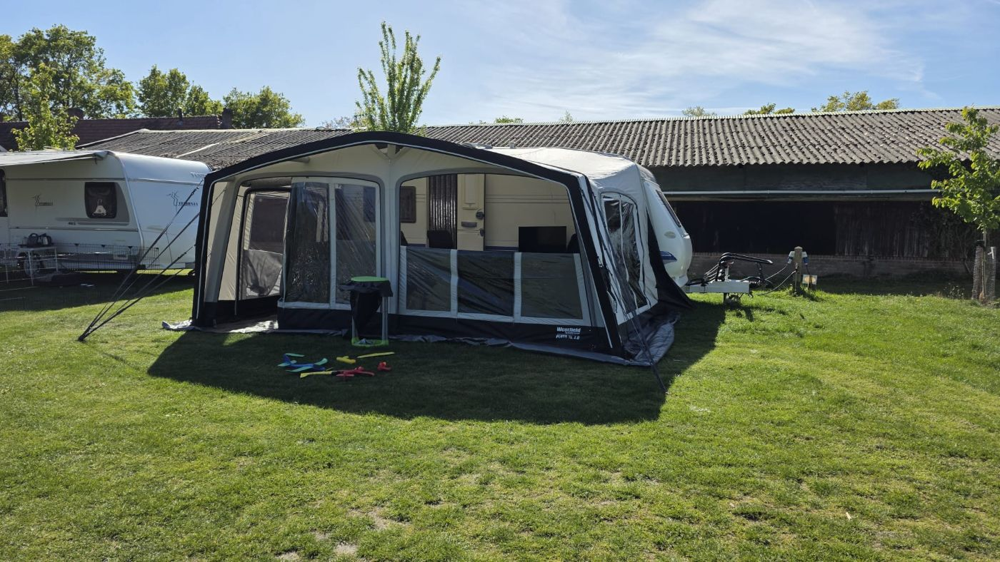
Camping Het Peelvenneke Zeeland (Noord-Brabant) · Noord-Brabant · Nederland
Rustige minicamping aan een visvijver in Zeeland (Noord-Brabant). De ruime plaatsen liggen in zon of schaduw; vanaf veel plekken kijk je uit over het water.…
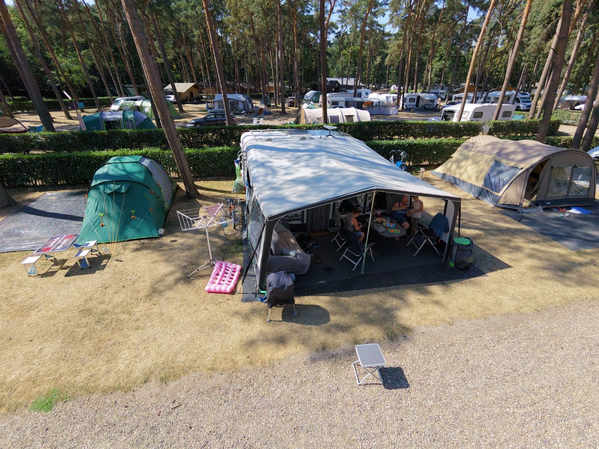
Familiepark Goolderheide Bocholt, België · Limburg · België
Een uitgebreid familiepark in Belgisch Limburg met buitenbaden, een strand aan het meer, een speeltuin, een restaurant en een winkel. Er is ook een…
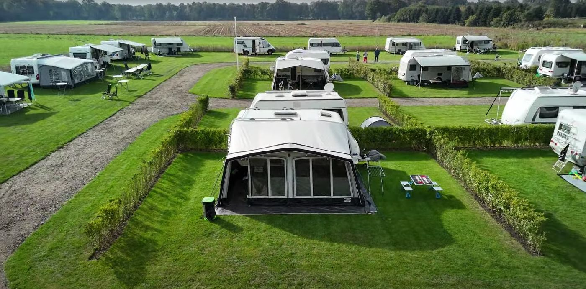
Esch Camping Kaampert Markelo (Overijssel) · Overijssel · Nederland
Kleinschalige, groene camping net buiten Markelo, op het Twentse platteland. De ruime plaatsen hebben water, stroom en een eigen afvoerpunt. Het dorp en de…
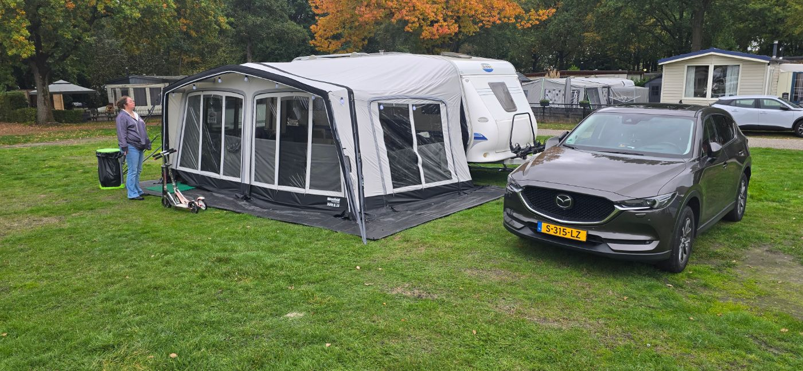
Landal Klein Vink (voorheen Roompot Klein Vink) Arcen (Limburg) · Limburg · Nederland
Landal Klein Vink is een groot recreatiepark in het bos bij Arcen. Het ligt naast Thermaal bad Arcen en aan een recreatieplas met een zandstrand. De…